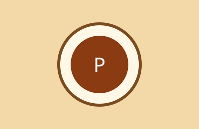

La gastronomía guatemalteca
Descubre los mejores platillos de Guatemala, una mezcla de tradición maya y herencia española.

Platos destacados:
- Pepián
- Jocón
- Kak'ik
Descubre los mejores platillos de Guatemala, una mezcla de tradición maya y herencia española.

Platos destacados:
Tuesta las especias antes de molerlas para un sabor más intenso.